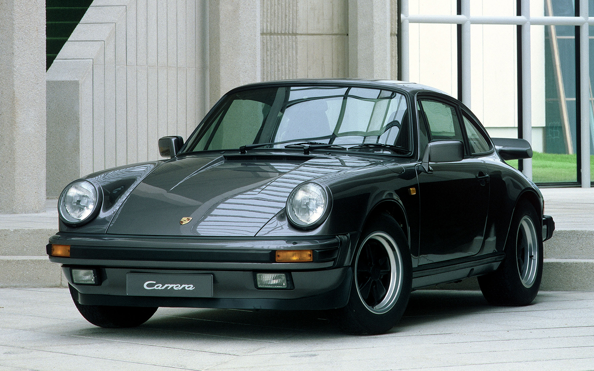

×
Kezdőlap
Autók
Motorok
Elérhetőségek
Szerződési feltételek
☰
Renault Alpine A310
Kilóméter óra:
76 000km
Sebesságváltó típusa: manuális
Teljesítmény: 110kW (150 LE)
Első forgalomba helyezés: 06/1982
ára: 12 000€
Vásárlás
Volkswagen Beetle
Kilóméter óra:
10 000km
Sebesságváltó típusa: manuális
Teljesítmény: 25kW (34 LE)
Első forgalomba helyezés: 02/1957
ára: 10 000€
Vásárlás
Delorean DMC-12
Kilóméter óra:
75 000km
Sebesságváltó típusa: manuális
Teljesítmény: 101kW (137 LE)
Első forgalomba helyezés: 01/1989
ára: 85 000€
Vásárlás
Ferrari F40
Kilóméter óra:
24 000km
Sebesságváltó típusa: manuális
Teljesítmény: 351kW (477 LE)
Első forgalomba helyezés: 05/1989
ára: 2 500 000€
Vásárlás
Mazda RX-7
Kilóméter óra:
141 800km
Sebesságváltó típusa: manuális
Teljesítmény: 180kW (245 LE)
Első forgalomba helyezés: 07/1995
ára: 84 900€
Vásárlás
Nissan Skyline VSpec 2 GTR R32
Kilóméter óra:
103 000km
Sebesságváltó típusa: manuális
Teljesítmény: 205kW (279 LE)
Első forgalomba helyezés: 03/1994
ára: 210 000€
Vásárlás

Porsche 911
Kilóméter óra:
41 800km
Sebesságváltó típusa: manuális
Teljesítmény: 160kW (218 LE)
Első forgalomba helyezés: 08/1989
ára: 220 000€
Vásárlás
Supra 3.0 Turbo GT MK3 A70
Kilóméter óra:
292 800km
Sebesságváltó típusa: manuális
Teljesítmény: 172kW (234 LE)
Első forgalomba helyezés: 08/1989
ára: 14 900€
Vásárlás
Toyota Corolla GT AE86
Kilóméter óra:
100 800km
Sebesságváltó típusa: manuális
Teljesítmény: 91kW (124 LE)
Első forgalomba helyezés: 05/1986
ára: 36 000€
Vásárlás
↑